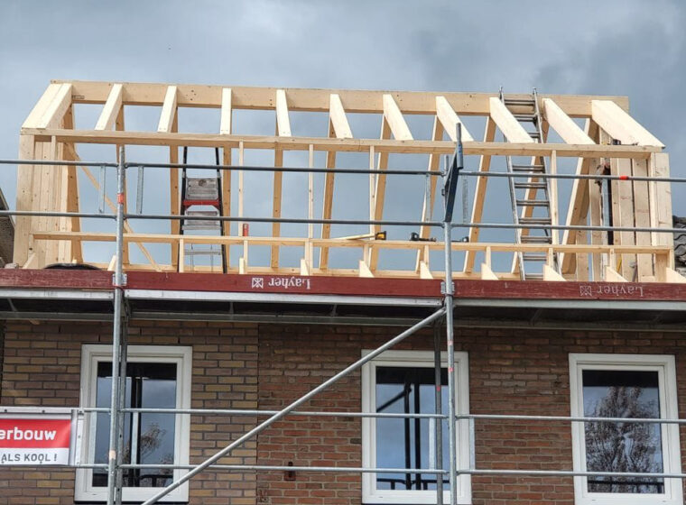

Het korte antwoord
Een nokverhoging past bij een schuin dak. Je verandert één of beide dakvlakken en verhoogt de nok, zodat de bestaande zolder meer stahoogte en bruikbare vloer krijgt. Een dakopbouw is doorgaans een nieuwe, volwaardige bouwlaag op een plat dak of plat dakdeel.
Kijk dus niet alleen naar het aantal gewenste kamers. Het bestaande dak, de draagconstructie en het omgevingsplan bepalen welke route haalbaar is. Een foto van de voorgevel zegt te weinig; doorsnede, plattegrond en constructie geven het echte antwoord.

Vergelijk op 5 punten
- Daktype: schuin dak wijst meestal richting nokverhoging; plat dak richting dakopbouw.
- Ruimtewinst: een nokverhoging benut de bestaande zolder beter. Een dakopbouw maakt vaker een nieuwe laag met rechte gevels.
- Constructie: bij de nok verandert de kap. Bij een opbouw moet het bestaande dak de nieuwe bouwlaag kunnen overdragen naar de draagconstructie.
- Buitenkant: beide veranderen volume en aanzicht. De positie ten opzichte van straat en buren telt mee bij de beoordeling.
- Casco-kosten: formaat, één- of tweezijdige nok, kozijnen, isolatie, kraanwerk en constructieve versterking wegen zwaarder dan alleen het aantal vierkante meters.
Een dakkapel vergroot slechts een deel van een schuin dakvlak. Heb je vooral licht en stahoogte in één kamer nodig, vergelijk dan eerst dakkapel of dakopbouw.
Bewaar deze 6-vragencheck
- Is je huidige dak schuin, plat of een combinatie?
- Wil je één zolder bruikbaarder maken of een nieuwe bouwlaag indelen?
- Waar lopen dragende wanden, balken en installaties?
- Hoeveel kozijnen en daglichtopeningen wil je?
- Kan een kraan de woning bereiken en waar kan een steiger staan?
- Wat zit in de aanbieding: alleen casco, of ook trap, stucwerk, vloer en installaties?
Neem bij een eerste gesprek een dakdoorsnede, plattegrond, foto’s van binnen en buiten en je antwoorden mee. Daarmee kan een constructeur of bouwer veel sneller aangeven welke variant onderzoek verdient.
Vergunning en prijsindicatie
Ga niet uit van “bij de buren mocht het ook”. Regels verschillen per adres en plan. Start de officiële vergunningcheck in het Omgevingsloket en gebruik het stappenplan bouwen en verbouwen van de Rijksoverheid voor de voorbereiding.
Aanbouwdirect levert beide varianten casco: wind- en waterdicht, geïsoleerd en met kozijnen waar afgesproken. Binnenafwerking valt niet standaard in de indicatie. Kies nokverhoging of dakopbouw in de calculator voor een bandbreedte; na controle op locatie volgt de definitieve offerte. Verdiep je ook in de kosten van een nokverhoging en de kosten van een dakopbouw.
Veelgestelde vragen
Geeft een dakopbouw altijd meer ruimte?
Vaak wel, maar niet automatisch. De toegestane buitenmaat, trap, constructie en installatieruimte bepalen hoeveel bruikbare vloer overblijft.
Kan een nokverhoging aan één kant?
Dat kan technisch een optie zijn. Of het op jouw woning mag en constructief past, moet uit het ontwerp, de adrescheck en constructieberekening blijken.
Heb ik voor beide een vergunning nodig?
Dat is adres- en ontwerpafhankelijk. Controleer beide varianten afzonderlijk in het Omgevingsloket; een wijziging van daklijn of volume is geen detail.
Wat is de beste eerste stap?
Beantwoord de zes vragen, doe de vergunningcheck en vergelijk daarna dezelfde casco-scope. Zo voorkom je dat je prijzen voor twee verschillende eindresultaten naast elkaar legt.
Verder met jouw plan?
Check de casco-prijsindicatie online, of bel ons in Aalsmeer. Definitieve offerte na afspraak op locatie.